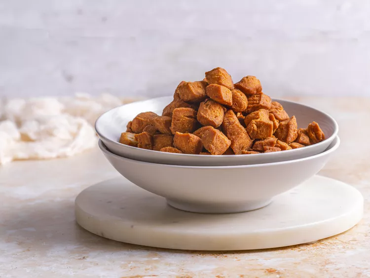

chin-chin Recipe
Chin Chin

Chin Chin
Chin Chin – West African Fried pastry enjoyed throughout the region especially in Nigeria- Crispy Crunchy and Addictive.
Ingredients
- 3 1/2 cups 440 grams all-Purpose flour
- 3/4 cup sugar
- 1/2 teaspoon salt
- 1/4 teaspoon baking powder
- 1- teaspoon grated nutmeg
- 1 teaspoon grated lime zest
- 1/4 cup or 4 tablespoons margarine/butter
- 1 large egg
- 3/4 cup milk
- oil for frying
How to Make Chin Chin
- Using a mixer or by hand mix the dry ingredients; flour, baking powder, salt, sugar, nutmeg and lime zest
- Add the butter to the flour and mix well until the butter is well incorporated with the flour.
- Add milk and egg into the mixture. Keep mixing until you have formed a sticky dough ball
- Dump the dough ball onto a floured surface and knead, incorporating more flour into the dough as needed, until the dough is smooth, elastic, and even in color and no longer sticky. Chin-chin can be cut into many shapes and sizes
- Divide dough in half .On a floured board roll each half about 1/6 inches thick. Just like linguine or fettuccine. You can make it easy by using a pasta machine if you have one available. Make shapes as desired.
- Add oil (about 3 inches deep) to a heated skillet/sauce pan or my all time favorite Dutch oven that is over medium heat and bring it to 375 degrees .
- Fry in hot oil until golden .Remove from oil, drain, and serve. You can store this in an air tight container for up to a month.